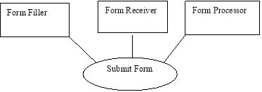
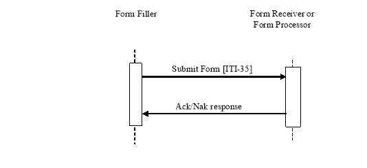

3.35 Submit Form [ITI-35]
This section corresponds to transaction [ITI-35] of the IHE IT Infrastructure Technical Framework. Transaction [ITI-35] is used by the Form Filler and Form Receiver or Form Processor Actors.
3.35.1 Scope
This transaction involves a Form Filler submitting a form to a Form Receiver or Form Processor.
3.35.2 Use Case Roles
Actor: Form Filler
Role: A forms display and editing system capable of allowing form fields to be completed.
Actor: Form Receiver
Role: A system that receives submitted forms from a Form Filler.
Actor : Form Processor
Role : A system that receives submitted forms from a Form Filler and processes them.
3.35.3 Referenced Standards
Implementors of this transaction shall comply with all requirements described in ITI TF-2x: Appendix V : Web Services for IHE Transactions.
RFC1738, Uniform Resource Locators (URL), December 1994, http://www.faqs.org/rfcs/rfc1738.html
RFC2616 HyperText Transfer Protocol HTTP/1.1
Extensible Markup Language (XML) 1.0 (Second Edition). W3C Recommendation 6 October 2000. http://www.w3.org/TR/REC-xml.
ITI TF-2x: Appendix V Web Services for IHE Transactions
3.35.4 Messages
Figure 3.35.4-1: Interaction Diagram
3.35.4.1 Submit Form
This transaction is initiated by a Form Filler submitting form instance data, using XML as a format, to a Form Receiver or Form Processor.
3.35.4.1.1 Trigger Events
The Submit Form transaction is triggered by the submission action from within the form.
3.35.4.1.2 Message Semantics
The Submit Form transaction shall carry a SubmitFormRequest element, with submitted form data as XML child elements of the SubmitFormRequest element. Content profiles may further constrain the content of the SubmitFormRequest element.
See the schema provided with the support materials (see ITI TF-2x: Appendix W ).
3.35.4.1.3 Expected Actions
Upon receipt of the Submit Form request, the Form Receiver or Form Processor shall return a SubmitFormResponse element, or errors with SOAP Faults, for example if the posted data cannot be recognized.
The Form Filler may display the results of the response from the Form Receiver or Form Processor.
The Form Receiver or Form Processor shall use the SOAP Faults defined in Table 3.35.4.1.3-1 when appropriate. Form Fillers shall be capable of accepting other values beyond the ones specified here.
Table 3.35.4.1.3-1: SOAP Faults
| Description of error | Code | Reason Text |
| Cannot recognize the posted data | Sender | Required Information Missing |
An example of a SOAP Fault is:
<env:Envelope xmlns:env="http://www.w3.org/2003/05/soap-envelope"
xmlns:xml="http://www.w3.org/XML/1998/namespace">
<env:Body>
<env:Fault>
<env:Code>
<env:Value>env:Sender</env:Value>
</env:Code>
<env:Reason>
<env:Text xml:lang="en">Required Information Missing</env:Text>
</env:Reason>
</env:Fault>
</env:Body>
</env:Envelope>
3.35.4.2 Submit Form Response
3.35.4.2.1 Trigger Events
This message is triggered by a Form Filler submitting form instance data.
3.34.4.2.2 Message Semantics
The Submit Form Response shall return a SubmitFormResponseType element containing:
- A responseCode string that may be constrained by Content Profiles
- An optional content element containing formData, as is returned by RetrieveFormResponse
- An optional contentType string that may be constrained by Content Profiles.
See the schema provided with the support materials (see ITI TF-2x: Appendix W ).
3.35.4.2.3 Expected Actions
The Form Filler may display the results of the response from the Form Receiver or Form Processor. The form behavior may be further profiled by content domain profiles.
3.35.5 Protocol Requirements
Implementors of this transaction shall comply with all requirements described in ITI TF-2x: Appendix V : Web Services for IHE Transactions.
The Submit Form transaction shall use SOAP 1.2.
WSDL Namespace Definitions
| ihe | urn:ihe:iti:rfd:2007 |
| soap12 | http://schemas.xmlsoap.org/wsdl/soap12/ |
| wsaw | http://www.w3.org/2005/08/addressing |
| xsd | http://www.w3.org/2001/XMLSchema |
These are the requirements for the Submit Form transaction presented in the order in which they would appear in the RFD Submit Form WSDL definition:
- The following types shall be imported (xds:import) in the /definitions/types section:
- Namespace=”urn:ihe:iti:rfd:2007”, schema=”RFD.xsd”
- The /definitions/message/part/@element attribute of the Submit Form Request message shall be defined as: “ihe:SubmitFormRequest”
- The /definitions/message/part/@element attribute of the Submit Form Response message shall be defined as: “ihe:SubmitFormResponse”
- Refer to Table 3.35.5-1 for additional attribute requirements.
Table 3.35.5-1: Additional Attribute Requirements
| Attribute | Value |
| /definitions/portType/operation@name | SubmitForm |
| /definitions/portType/operation/input/@wsaw:Action | urn:ihe:iti:2007:SubmitForm |
| /definitions/portType/operation/output/@wsaw:Action | urn:ihe:iti:2007:SubmitFormResponse |
| /definitions/binding/operation/wsoap12:operation/@soapActionRequired | false |
These are the requirements that affect the wire format of the SOAP message. The other WSDL properties are only used within the WSDL definition and do not affect interoperability. Full sample request and response messages are in Section 3.35.5.1 Sample SOAP Messages.
For informative WSDL see ITI TF-2x: Appendix W .
The <ihe:SubmitFormRequest> element is defined as:
- One or more <xs:any> elements
This allows the Form Manager to construct forms that submit form data using any XML representation.
The <ihe:SubmitFormResponseType> element is defined as:
- An optional <ihe:content> element which is of type <ihe:formDataType> as also used in the Retrieve Form Response. If present it shall contain:
- One of the following:
- <ihe:Structured> containing XML encoding of a form
- <ihe:Unstructured> containing base64Binary encoding of a form
- <ihe:URL> containing the URL of a form
- An optional <ihe:instanceID> of type xs:string.
- An optional <ihe:contentType> element, of type xs:string.
- A required <ihe:responseCode> element of type xs:string.
3.35.5.1 Sample SOAP Messages
The samples in the following two sections show a typical SOAP request and its relative SOAP response. The sample messages also show the WS-Addressing headers <Action/>,
<MessageID/>, .; these WS-Addressing headers are populated according to ITI TF-2x: Appendix V : Web Services for IHE Transactions. Some of the body of the SOAP message is omitted for brevity.
3.35.5.1.1 Sample Submit Form SOAP Request
<?xml version='1.0' encoding='UTF-8'?>
<soap:Envelope xmlns:soap="http://www.w3.org/2003/05/soap-envelope" xmlns:xsi="http://www.w3.org/2001/XMLSchema-instance" xmlns:xsd="http://www.w3.org/2001/XMLSchema">
<soap:Header>
<wsa:To>http://localhost:4040/axis2/services/someservice</wsa:To>
<wsa:MessageID>urn:uuid:76A2C3D9BCD3AECFF31217932910053</wsa:MessageID>
<wsa:Action soap:mustUnderstand="1">urn:ihe:iti: 2007:SubmitForm</wsa:Action>
</soap:Header>
<soap:Body>
<SubmitFormRequest xmlns="urn:ihe:iti:rfd:2007">
…
</SubmitFormRequest>
</soap:Body>
</soap:Envelope>
3.35.5.1.2 Sample Submit Form SOAP Response
<?xml version='1.0' encoding='UTF-8'?>
<soap:Envelope xmlns:soap="http://www.w3.org/2003/05/soap-envelope" xmlns:xsi="http://www.w3.org/2001/XMLSchema-instance" xmlns:xsd="http://www.w3.org/2001/XMLSchema">
<soap:Header>
<wsa:To>http://localhost:4040/axis2/services/someservice</wsa:To>
<wsa:MessageID>urn:uuid:76A2C3D9BCD3AECFF31217932910053</wsa:MessageID>
<wsa:Action soap:mustUnderstand="1">urn:ihe:iti: 2007:SubmitFormResponse</wsa:Action>
</soap:Header>
<soap:Body>
<SubmitFormResponseType xmlns="urn:ihe:iti:rfd:2007">
<content>
<URL>http://somehost/xxx/services/someForm</URL>
<instanceID>1.2.3.4.5</instanceID>
</content>
<contentType />
<responseCode />
</SubmitFormResponseType>
</soap:Body>
</soap:Envelope>
3.35.6 Security Considerations
As noted in the mitigations section of ITI TF-1: 17.5 Security Considerations, endpoints are free to implement TLS as needed for additional privacy and protection. Content profiles, based upon the nature of the data, may require use of ATNA.